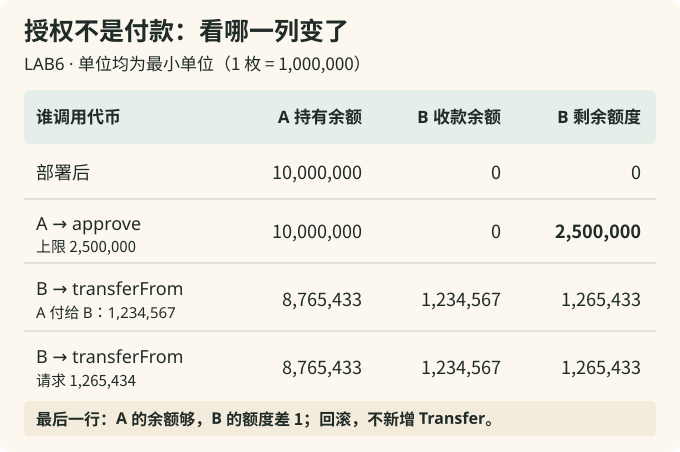

本页目录
先修：13 · ABI 与整数、17 · 回执与块锚点、21 · 登录与签名。本课不连钱包：用两只自建 ERC-20、一对临时账户和真实本地回执，做一张能离线打开的授权凭单。721、1155 和签名授权用于接口对照，不拿第三方资产做写入演习。
把「谁可以扣」和「谁已经收到」分两列
把代币合约想成独立记账的账簿。balanceOf(A) 是 A 在这一本账里的余额，不是 A 的 ETH；allowance(A,B) 是 A 允许 B 作为调用者代扣的剩余上限。A 是持有人（owner），B 是获准调用 transferFrom 的地址（spender）。本例 B 同时是收款人，方便两账户对账；这不是协议限制。实际收款人是 transferFrom(from,to,value) 的 to，不必是 B。在一笔直接调用中，交易的 to 却是代币合约。把这三个角色都叫「目标地址」，页面就很容易展示错人。
A → token.approve(B, cap) 的作用是在该代币上写 allowance[A][B] = cap。它不是给 B 转账，不冻结 A 的余额，也不是给某个订单号预留资金。A 可以另行花掉自己的币。等到 B 自己调用 token.transferFrom(A,B,x)，合约才检查余额与额度，扣 A、加 B、减额度。在这份无手续费、供给固定的合约中，每笔成功扣款同时满足 A 减少量 = B 增加量 = 本次消耗额度。普通的 A → token.transfer(B,x) 则直接花 A 自己的钱，不消耗 B 的额度。


approve 设的是新上限，不是给旧上限做加法。界面要列完整链号、代币地址、spender、数量与单位；用户换链或换账户就重新读取，不能用同名代币沿用旧决定。本例只从零授有限额度。实际需要替换已有非零额度时，ERC-20 建议客户端先设为零，确认回执、复核当前状态再设新值；这既不能撤回已发生的扣款，也不是对未来扣款时点的保证。普通 ERC-20 的额度没有标准到期时间，退出网站不会撤销它。
同样写着「授权」，有的管数量，有的管整套藏品
拿「只允许交付一件」这样的需求来对照。先确定链与合约，再决定要不要显示 ID、数量或整套资产的权限。一个 approve(address,uint256) 方法名甚至选择器，都区分不了 ERC-20 和 ERC-721 的业务语义。
| 合约问的是什么 | 为了交付，应该读什么 | 谁能做什么，凭什么验收 |
|---|---|---|
| ERC-20：同一种币有多少个最小单位？ | balanceOf(A)、allowance(A,B)；若提供 decimals()，用它显示数量。无 tokenId |
approve(B,7) 设 7 个最小单位的上限；Approval 不是到账，到账查匹配合约的 Transfer 与余额 |
| ERC-721：这一件编号 7 的物品归谁？ | ownerOf(7) 查唯一持有人；balanceOf(A) 只是这个系列中 A 有几件，不告诉你是哪几件 |
approve(B,7) 指定这一件，getApproved(7) 查被授权者，物品转移时这项单件授权清除。setApprovalForAll(B,true) 却允许 B 操作 A 在此合约的所有 NFT，另查 isApprovedForAll(A,B) |
| ERC-1155：一个合约中的某类物品，某人有几份？ | balanceOf(A,7) 查 A 持有 ID 7 的份数；可用 balanceOfBatch 查询多组账户与 ID |
标准授权是 setApprovalForAll 的持有人／操作员开关，不是「ID 7 的 2 份」额度。单笔转移带 ID 与数量，批量转移把 ID 与数量按位置配对；查 TransferSingle 或 TransferBatch |
例如 A 持有 ID 7 的三张券和 ID 9 的一张券：这是可用 1155 表达的库存，不能用 ownerOf(7) 猜唯一持有人；也不能为了让商户收两张就把 operator 开关标成「最多 2 张」。721/1155 实现 ERC-165 接口声明，仍应以受信发布清单与 ABI 确定接入对象。对第三方资产只做只读核验；同一个 symbol 不表示同一个资产。ERC-20 的 symbol、decimals 都是可选元数据，读取失败应显示「精度未知」或原始单位，不擅自补 18。
同样 2.5 枚，两种精度怎样结算？
LabToken.sol 构造时把固定供应量全部发给部署者，发出 Transfer(0地址, 部署者, supply)。decimals 只说明展示刻度，转账参数和事件永远传整数。两个实例各发 10 枚给 A，各给 B 上限 2.5 枚。下面是默认输入的预期值，地址、交易哈希、块哈希则必须来自自己这一轮。
| 资产 | 2.5 枚的上限（最小单位） | 已同意的第一笔扣款（最小单位） | 成功后 B 实收（枚） | 剩余可扣（枚） |
|---|---|---|---|---|
| LAB6 · 6 位 | 2500000 | 1234567 | 1.234567 | 1.265433 |
| LAB18 · 18 位 | 2500000000000000000 | 1234567000000000001 | 1.234567000000000001 | 1.265432999999999999 |
在 LAB18 上，A 的余额应从 10 降为 8.765432999999999999 LAB18。第 18 位的 1 和 LAB6 的最小单位不是同一个量；两笔也不能因为显示前六位相同就合并。Java 从十进制文本用 new BigDecimal(text).movePointRight(d).toBigIntegerExact() 得到原始整数，再检查业务范围和 uint256 范围；展示时从 BigInteger raw 用 new BigDecimal(raw, d).toPlainString()。不经 double。本课 Python 直接拆文本、将小数部分右补零，例如 1.25 在 6 位资产上拼成 1250000；不接受比资产精度更长的小数字符串。归档中的原始数量用十进制字符串，不指望浏览器 Number 容下 18 位账。
从仓库根目录生成本轮凭单
依赖：Python 3.11 标准库、Bash、lsof、curl；第 13 课工具准备的 Forge、Cast、Anvil 1.7.1 与 solc 0.8.28。工具备齐后无需联网、安装 Python 包或导入密钥。确保本机 18622 空闲。脚本只启动 127.0.0.1:18622 的内存链（Cancun，chain ID 31337），不接受外部 RPC；两账户各有 10 测试 ETH 付 gas，与 10 枚代币是不同的账。
export PATH="${XDG_CACHE_HOME:-$HOME/.cache}/chain-course/m04/bin:$PATH"
export FOUNDRY_SOLC="$(command -v solc)"
unset ANVIL
WORK=$(mktemp -d)
python3 labs/m06/allowance.py --out "$WORK/A22" --hold
终端 A 待命。把输出的 VOUCHER=file:///…/voucher.html 中完整的 file: 地址放进浏览器，打开本轮凭单。它会列出链、完整 owner 与 spender、两份代币合约地址、各自的上限和每一步结果。展开「查看交易和区块凭证」，可以抄下哈希；末尾链接的 evidence.json 保存原始 RPC 回执和块末读数。页面不请求钱包权限，不自动刷新；关闭标签页不会重发扣款。脚本在已存在的 --out 目录上会停止，换一个新目录保留新一轮，不覆盖旧账。
读实验脚本的 settle()，按以下顺序对账。部署、带块号的 eth_call、写入与确认用共用链工具，不是浏览器本地改数字：
- 对每个地址先读
decimals()，与此次部署期望精度一致才继续。部署块末读balanceOf(A)、balanceOf(B)、allowance(A,B)，应是(supply, 0, 0)。这对地址在第二个合约上的额度又从零开始；授权不会跨合约继承。 send(rpc, owner, token, 'approve(address,uint256)', spender, cap)：回执from=A, to=token, status=0x1。要求惟一日志的发布地址就是这个 token，topics[0]是规范签名Approval(address,address,uint256)的 Keccak-256，接着两项是左补零的 owner、spender，data是 32 字节上限。该块 A、B 余额未动；只要拿这张回执去做收入，就会多记 2.5 枚。- 换成 B 发交易调用
transferFrom(A,B,debit)。源码读allowance[from][msg.sender]，不是allowance[from][to]。成功后核Transfer的发布者、签名、两个 indexed 地址与data的金额；再用这张回执的blockNumber同块读取三列，对照上表。ERC-20 并不要求transferFrom再发一条Approval；只靠累加或倒推Approval日志不能得出现时额度。真实接入还须处理某些 ERC-20 方法返回false而没有 revert 的情况：写交易的顶层status=0x1不自带 ABI 返回值，本课合约成功则返回true并产生匹配事件。 - 不重新授权。B 对同一合约再请求
remainingRaw + 1；这次合约先检查额度，在余额够的情况下也会 revert。用send(..., success=False)要求一张真实已打包的status=0x0回执，而不是把客户端预估失败当作实验结果。本笔logs=[]，三列仍与上一个块相同，gasUsed却非零。JS 页面若把「RPC 发回交易哈希」当作入账，将在这里记出第二笔不存在的付款。
本课每次调用只涉及这一份已知源码的单层代币，成功调用各有一条相关日志，无转账税、弹性供应或手续费扣币。status=0x0 本身不含可读失败原因；这里能定位额度，是因为事先知道代码检查顺序、调用参数、块前余额和额度。线上处理多合约交易不能套用「取第一条日志」或「从输入值推到账」的捷径。
关掉页面，怎么按哈希找回结果？
保持终端 A 的 --hold 未回车，但关闭凭单标签页。到终端 B（仓库根目录），粘贴 A 打印的 ARCHIVE= 后面的绝对路径。这里模拟客服只剩工单中的一个哈希：先从归档定位 LAB18 的超额请求，再向活节点查它，不是渲染本地成功提示。
printf '本轮 ARCHIVE 路径：'; IFS= read -r R
TX=$(python3 -c 'import json,sys; print(json.load(open(sys.argv[1]))["assets"][1]["steps"]["over"]["receipt"]["transactionHash"])' "$R/evidence.json")
curl --noproxy '*' -fsS http://127.0.0.1:18622 -H 'Content-Type: application/json' \
--data "{\"jsonrpc\":\"2.0\",\"id\":22,\"method\":\"eth_getTransactionReceipt\",\"params\":[\"$TX\"]}" \
> "$R/recovered.json"
python3 - "$R" <<'PY'
import json, sys
from pathlib import Path
p = Path(sys.argv[1]); archive = json.loads((p / 'evidence.json').read_text())
a = archive['assets'][1]; old = a['steps']['over']['receipt']
wire = json.loads((p / 'recovered.json').read_text())
assert 'error' not in wire and wire['id'] == 22
r = wire['result']; assert r is not None, '本节点现在没有该回执'
assert (r['transactionHash'], r['blockHash']) == (old['transactionHash'], old['blockHash'])
assert r['from'].lower() == archive['spender'].lower() and r['to'].lower() == a['token'].lower()
assert r['status'] == '0x0' and not r['logs'] and int(r['gasUsed'], 16) > 0
print('已找回失败凭证：', r['transactionHash'], r['blockHash'], 'status=' + r['status'])
PY
想独立核一次精度？仍在终端 B，从本轮归档取地址和原回执块号，发只读调用。下列三个输出应依次为 18、1234567000000000001、1265432999999999999（后两个是默认输入下的最小单位；Cast 可能另附科学计数提示）。这不是重新执行历史交易，是在指定块末读合约的状态。
export PATH="${XDG_CACHE_HOME:-$HOME/.cache}/chain-course/m04/bin:$PATH"
read -r TOKEN A B HEIGHT < <(python3 - "$R/evidence.json" <<'PY'
import json, sys
r = json.load(open(sys.argv[1])); t = r['assets'][1]
print(t['token'], r['owner'], r['spender'], int(t['steps']['over']['receipt']['blockNumber'], 16))
PY
)
RPC=http://127.0.0.1:18622
cast call "$TOKEN" 'decimals()(uint8)' --block "$HEIGHT" --rpc-url "$RPC"
cast call "$TOKEN" 'balanceOf(address)(uint256)' "$B" --block "$HEIGHT" --rpc-url "$RPC"
cast call "$TOKEN" 'allowance(address,address)(uint256)' "$A" "$B" --block "$HEIGHT" --rpc-url "$RPC"
回到 A 按回车关闭节点。归档此后仍可离线阅读，但重启出的另一条 31337 内存链不是本轮历史。查不到旧哈希可能是错实例、未见、节点离线等问题，不等于「已失败」；应分别处理 RPC 错误、result:null 与真实失败回执。别为了找旧状态就在新链重发原订单。
如果产品说「签一下免 gas」，哪一步才改链？
本课代币走普通 approve，未实现 permit。支持 ERC-2612 的代币才可走下列协议路径；这些是规范步骤，不是上面实验多跑出来的一组回执。
- 钱包先读取该代币的
nonces(owner)与签名域，展示 EIP-712 的域与Permit(owner,spender,value,nonce,deadline)。常见域含名称、版本、chainId与verifyingContract；按该合约实际域核验。value是上限的最小单位，nonce是此合约对这个 owner 的授权序号，不是账户的交易 nonce；deadline是签名可提交的最后区块时间（Unix 秒）。 - owner 在链下签结构化消息，给出可提交的签名。仅签名不会写
allowance、不会发Approval，也没有交易哈希。但它不是「无害登录」：有效且未到期的签名可以由别人提交。不要把签名当作作业证据对外分享。用户拒签，本次流程应停止。 - owner 或中继者另发链上交易调用
permit(owner,spender,value,deadline,v,r,s)，提交方付原生币 gas。合约确认非零 owner、签名对应该域与当前 nonce、block.timestamp <= deadline，才将额度设为 value、nonce 加一、发Approval。过期或 nonce 不符会 revert。同一份签名的提交截止时间，不是已建立额度的自动失效时间。 - 扣款仍靠
transferFrom；可由业务合约在一笔交易中先应用 permit 再扣款，但这两步的含义和证据不能合并成「签了就到账」。第 21 课的 SIWE 签的是网站登录挑战，既不创建这个 allowance，也不能拿来替代permit。界面至少分「已签、待提交」「授权已上链」「已扣款」；合约或域不匹配就不发起签名。
独立作业：额度刚好用尽，另一只币只扣最小一份
先在纸上写好两笔可扣金额和两笔超额请求，再在关闭前一轮后从根目录另开新链。用上面终端 A 的工具环境，运行：
WORK2=$(mktemp -d)
python3 labs/m06/allowance.py --out "$WORK2/edge" --spend6 2.5 --spend18 0.000000000000000001 --hold
提交新 voucher.html、evidence.json、用新 ARCHIVE 恢复的 recovered.json。另列两行：合约地址、decimals、被授权者、超额请求的 raw、失败交易及块哈希、失败块末双方余额和额度。不要提交节点目录、助记词、私钥或钱包签名。
判据： LAB6 的合法扣款用光额度，A / B / 额度为 7.5 / 2.5 / 0 LAB6，再要 1 个最小单位也不行。LAB18 只收 1 个最小单位，A 余 9.999999999999999999 LAB18，授权余 2.499999999999999999 LAB18，再要整 2.5 LAB18 时仍差 1；两笔失败都不留 Transfer。换回各自资产的原始整数能复算，不把两个实验实例的地址混在一行。最后尝试 python3 labs/m06/allowance.py --spend6 0.0000001：应在启动节点前报告精度错误，无交易哈希；说明这与有哈希的真回滚有什么不同。演练后回车停链。